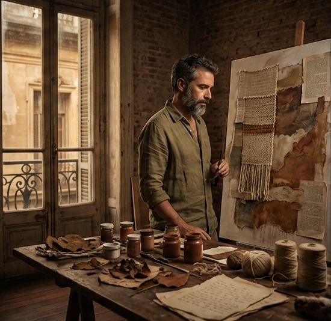

Carlitos Pérez
Pintura, instalación y memoria.
Obra que habita los márgenes entre lo visible y lo olvidado.

El arte como
acto de memoria
Carlitos Pérez (Buenos Aires, 1987) es artista visual y docente. Su práctica explora la memoria colectiva, la identidad y la fragilidad de los archivos personales a través de la pintura gestual y la instalación inmersiva.
Formado en la Universidad Nacional de las Artes, su obra ha sido exhibida en galerías de América Latina y Europa. Trabaja con capas de pigmento, materia orgánica y fragmentos de texto para construir paisajes emocionales que interpelan al espectador.
- Disciplina
- Pintura · Instalación · Arte textil
- Radicado en
- Buenos Aires, Argentina
- Contacto
- hola@carlitosperez.art
Un recorrido en
tiempo y obra
-
Primeras exposiciones colectivas
Participación en muestras colectivas en el Centro Cultural Recoleta y la galería Praxis de Buenos Aires. Inicio de la serie Arenas movedizas.
-
Premio Adquisición Salón Nacional
Reconocimiento del Salón Nacional de Artes Visuales por la obra Latitudes interiores, que ingresa a la colección permanente del Museo Nacional de Bellas Artes.
-
Residencia en Berlín — Künstlerhaus Bethanien
Residencia artística de seis meses en Berlín, donde desarrolla la serie Cartografías del olvido, su obra más extensa hasta la fecha.
-
Muestra individual — Museo de Arte Moderno de Buenos Aires
Retrospectiva parcial de su obra en el MAMBA. La instalación Umbrales ocupa la sala central y es visitada por más de 15.000 personas.
-
Participación en la Bienal de São Paulo
Representa a la Argentina junto a cuatro obras de gran formato. La crítica especializada destaca su lenguaje visual singular y la profundidad conceptual de su propuesta.
Próximas
apariciones
-
Muestra individual: Umbrales
Galería Sur Contemporáneo, Defensa 1234, Buenos Aires
Nueva versión expandida de la instalación que lo consagró en el MAMBA. Con obra inédita creada especialmente para este espacio.
Exposición -
Residencia Artística Internacional — Oaxaca
Centro de las Artes de Oaxaca, Oaxaca, México
Mes de trabajo intensivo en residencia junto a artistas de 12 países. Resultará en una publicación colectiva y una muestra itinerante.
Residencia -
Art Week Buenos Aires — Stand colectivo
La Rural, Pabellón Azul, Av. Sarmiento 2704, Buenos Aires
Presentación de obra reciente en el marco de la Art Week de Buenos Aires, uno de los encuentros más importantes del mercado del arte latinoamericano.
Feria